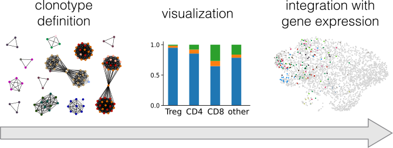

Scirpy is a scalable python-toolkit to analyse T cell receptor (TCR) repertoires from single-cell RNA sequencing (scRNA-seq) data. It seamlessly integrates with the popular scanpy library and provides various modules for data import, analysis and visualization.

For more Details see our GitHub page.